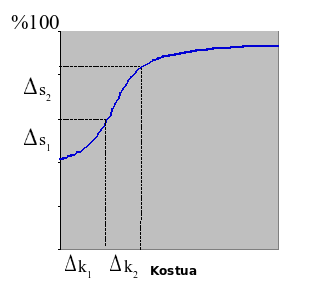

ISSKS Sarrera
Mikel Egaña Aranguren
Zer da segurtasuna informatikoa?
Ondasunak (Zerbitzuak): babestu nahi duguna (Datuak, softwarea, hardwarea, azpiegitura, langileak, informazioa, ...)
Arriskua: Kalteak jasan edo desagertzeko posibilitatea (Lapurketak, ondatzea, aldatzea, ordezkatzea, ...)
Zer da segurtasuna informatikoa?
Hauek bermatzeko egiten direnak:
- Ondasunak behar bezala erabiltzen dira
- Ondasunek sarbidea behar denari bakarrik ematen diete
- Ondasunek legeak eta araudiak betetzen dituzte
Zer da segurtasuna informatikoa?
Xedeak:
- Arriskuak eta mehatxuak detektatzea, halakorik gerta ez dadin edo haien eragina txikiena izan dadin
- Ondasunen erabilera egokia bermatzea
- Izan daitezkeen galerak mugatzea eta sistema lehenbailehen berreskuratuko dela ziurtatzea
- Dagokion legeria betetzea
Zer da segurtasuna informatikoa?
Ezinezkoa 100% segurtasuna lortzea: segurtasuna prozesu bat da, ez egoera bat

Nori dagokio segurtasun informatikoa?
Segurtasun-administratzailea:
- Segurtasun informatikoaren ardura eta erabakiak hartzen dituena
- Segurtasuna planifikatu eta inplementatu
Nori dagokio segurtasun informatikoa?
Zuzendaritza:
- Segurtasuna enpresaren helburu estrategikoa izan behar da
- Dirua inbertitu behar du
- Segurtasun informatikoko saila antolatu
Nori dagokio segurtasun informatikoa?
Erabiltzaileak:
- Prestakuntza
- Segurtasun-politika ezagutu behar dute
- Legedia ere ezagutu behar dute
Arriskuen analisia
Babestu nahi diren ondasunen identifikazioa
Ondasun horien balioaren (B) estimazioa
Aipatutako ondasunek jasaten dituzten mehatxuen identifikazioa
Mehatxu horiek egi bihurtzeko probabilitatearen (P) estimazioa
Arriskuen analisia
Mehatxu horietako bakoitzaren arriskuak gutxitzeko neurrien azterketa
Neurri horien kostuaren (K) azterketa
K < P * B
Segurtasunaren printzipioak
- Konfidentzialtasuna
- Osotasuna
- Prestasuna
- Kautotzea
- Zapuztezintasuna
Konfidentzialtasuna
Bildutako edota transmititutako informazioa soilik baimendutako alderdiek atzi dezaketela ziurtatzen du
Osotasuna
Bildutako edota transmititutako informazioa soilik baimendutako alderdiek alda dezaketela ziurtatzen du
Prestasuna
Bildutako edota transmititutako informazioa oztopo edo degradaziorik gabe baimendutako alderdiek erabil dezaketela ziurtatzen du
Kautotzea
Transmititutako informazioaren jatorria modu fidagarrian identifikatzen dela ziurtatzen du
Zapuztezintasuna
Transmititutako informazioaren igorleak edo jasotzaileak transmisioa ukatzerik ez daukatela ziurtatzen du
Espioitza eta informazio konfidentzialaren lapurketa
"Bere askatasunari segurtasunagatik uko egiten dionak ez du merezi ez bata ez bestea" B. Franklin
Vigilancia permanente. Edward snowden. Grupo Planeta, 2019.